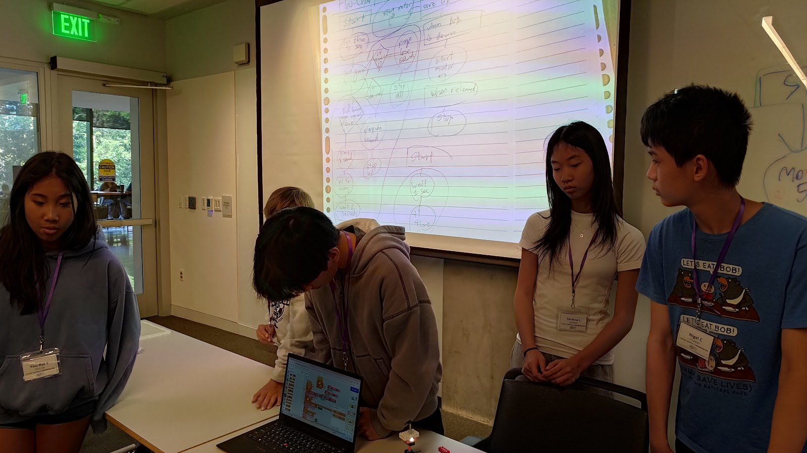
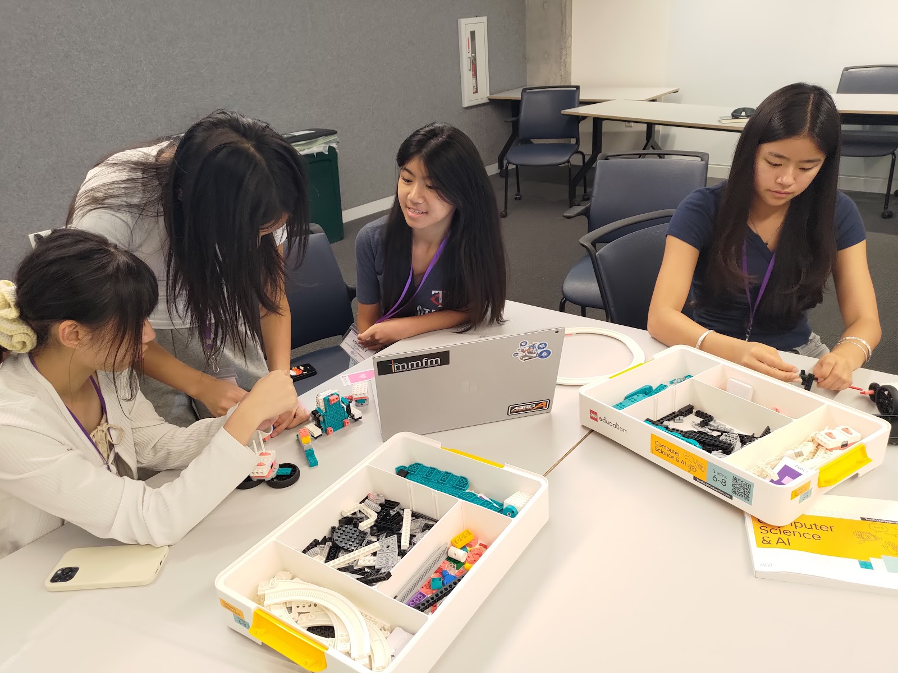
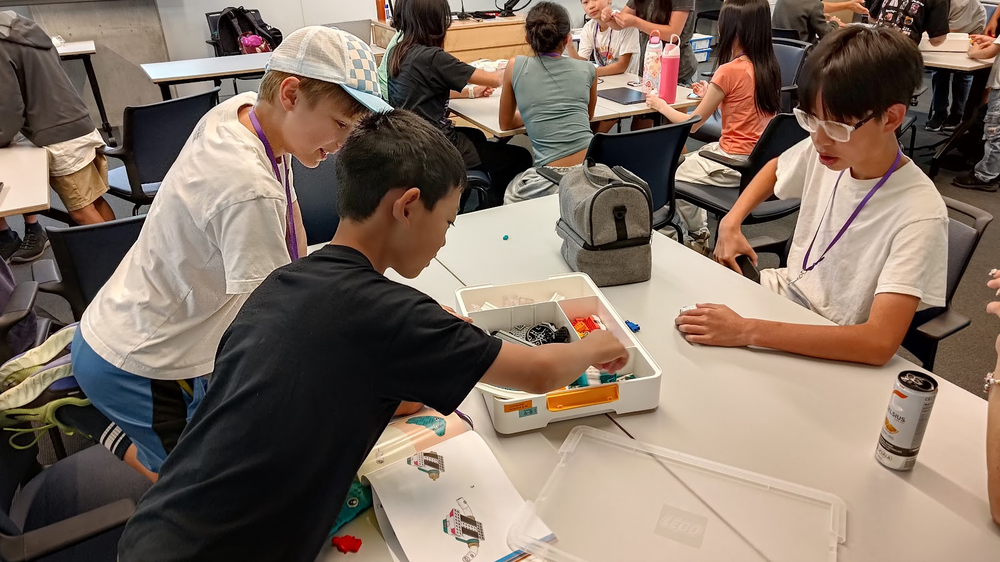
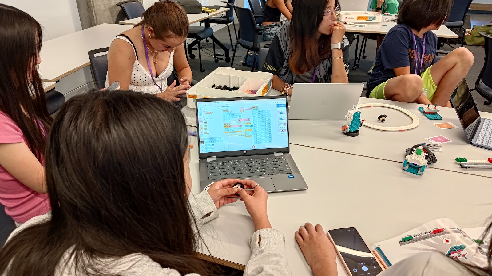
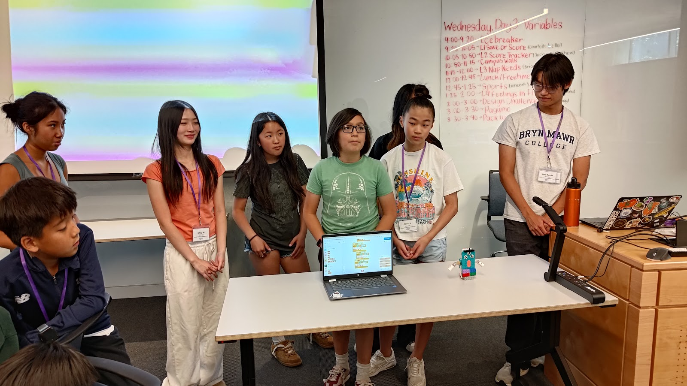
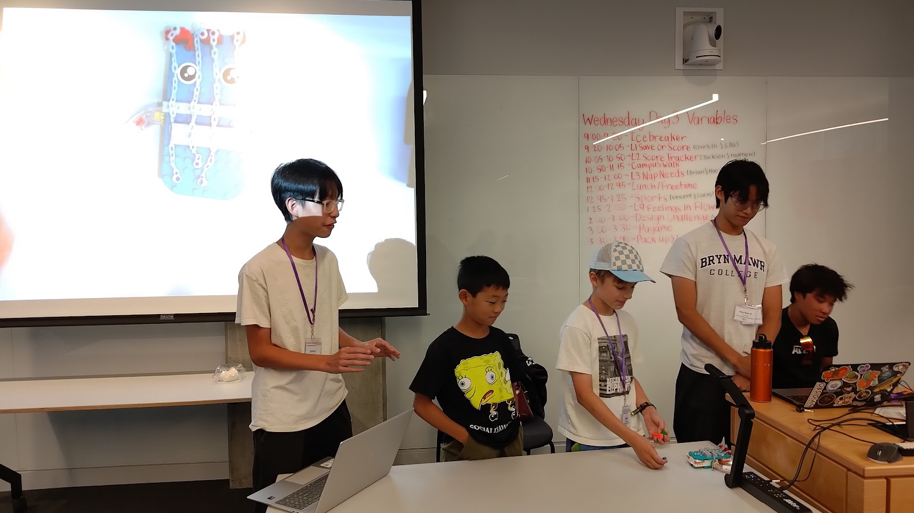
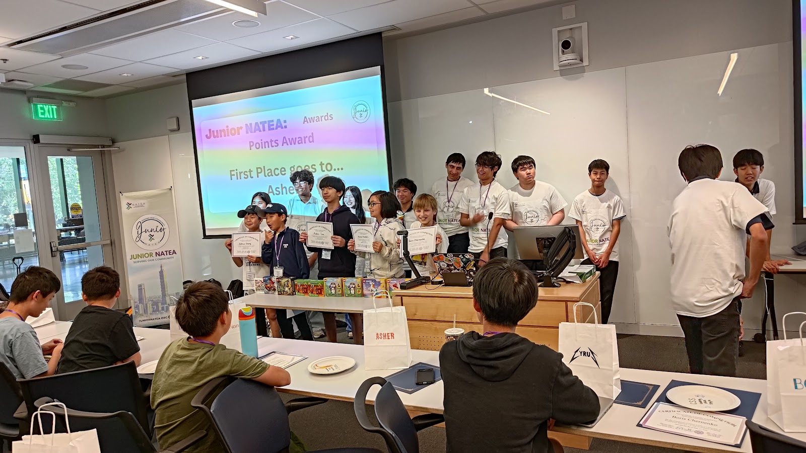
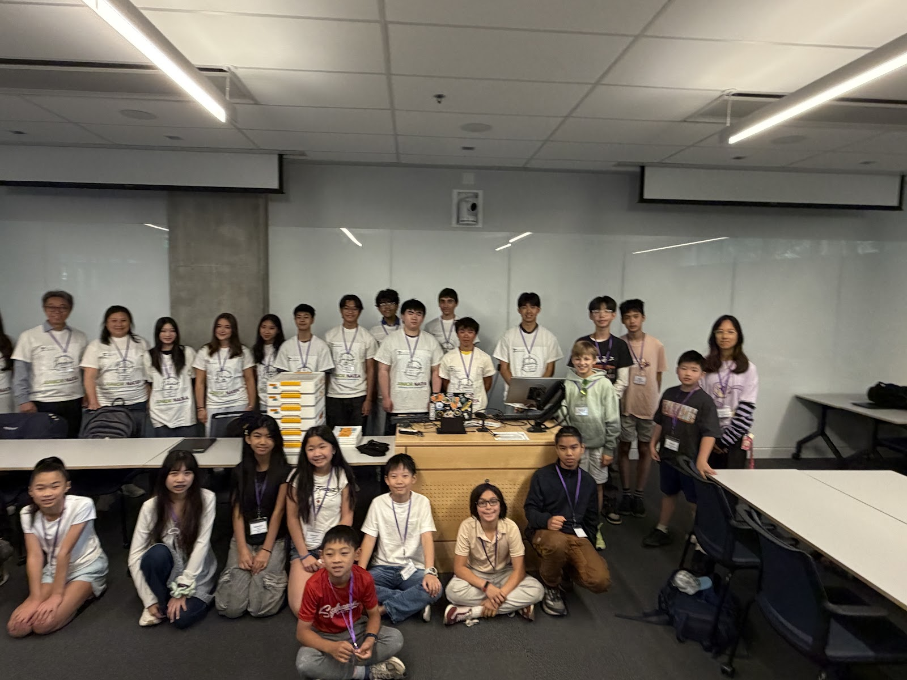

跨營隊交流
Quantum Robotics 到現場進行機器人 Demo
Quantum Robotics 的學生帶著競賽機器人來到營隊，讓學員近距離看見更大型的機器人系統如何運作，也讓不同青少年科技社群彼此交流學習。
照片故事
學生練習把想法說出來、聽見彼此，也和隊輔及新夥伴一起工作。


想法在 LEGO 零件、程式、提問、測試與修改之間逐漸成形。


不同小隊說明各自的設計選擇、程式邏輯與作品故事。


最後不只肯定個人的努力，也看見共同托住營隊的整個團隊。


精選短片
短片從活動影像庫直接嵌入，保留原始畫質，同時避免大型影片拖慢網站。
不同團隊的到訪，讓學生從自己的作品出發，看見更大的機器人系統與學習路徑。
Quantum Robotics 的學生帶著競賽機器人來到營隊，讓學員近距離看見更大型的機器人系統如何運作，也讓不同青少年科技社群彼此交流學習。
在機器人 Demo 之前，團隊成員先分享他們是誰，讓學員近距離認識另一個青少年機器人社群。
氣氛逐漸放鬆後，學生與隊輔把教室變成一座臨時舞台。背圓周率、拿起麥克風、一起表演與唱歌，也成為大家建立自在感與歸屬感的一部分。
一段自發演出，為休息時間的 Talent Show 揭開序幕。
一個自在表達自己，也與整個營隊分享的休息時刻。
把記憶、專注與同伴的鼓勵，變成一場有趣的表演。
臨時舞台讓每個人用不同方式參與，也更自在地成為團隊的一部分。